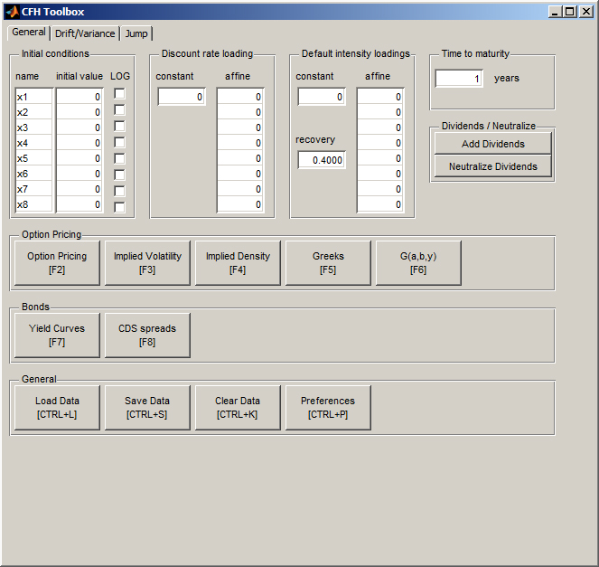
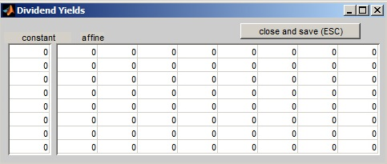
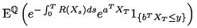
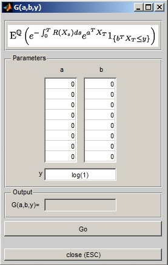
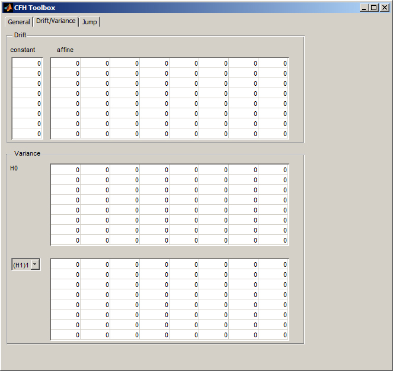
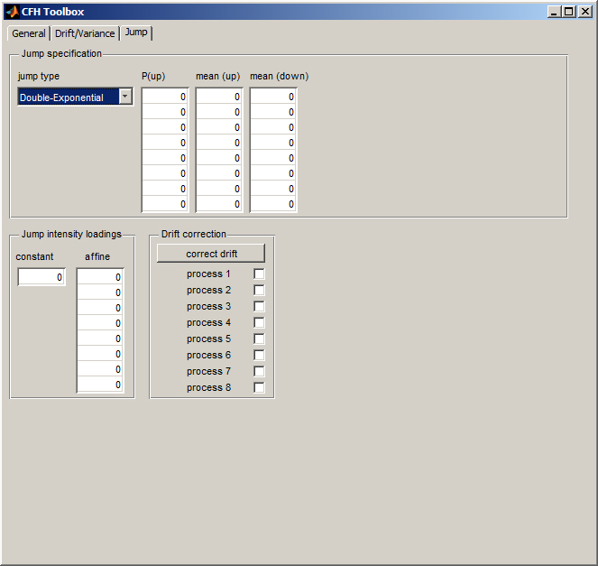
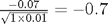

cfh
Graphical user interface implementing most of the CFH Toolbox functionalities. Part of the CFH Toolbox.
Syntax
cfh()
Contents
The GUI
After calling
>>cfh;
at the Matlab prompt, the GUI is loaded in its initial state. It consists of three tabs: General, Drift/Variance, and Jump. In each of these tabs, the corresponding parameters of the process dynamics are specified. For applications, see the examples.
Tab: General

In this tab, the initial conditions of the process as well as the system's discount factor and credit risk loadings (if any) are specified.
The first panel contains the table Names where the process variables can be named, and in initial value, their starting values are set. For assets such as stocks or currencies, whose prices are usually stated as a fraction of some numeraire asset, the LOG checkbox should be set. See the examples for details.
The discount rate dynamics are specified in the next panel. The constant corresponds to R0 and the affine table contains the state dependent parameters, i.e. R1.
If you are furthermore interested in credit risk applications, you may supply the loadings of the default intensity process - mathematically, a second discount rate process - in the corresponding panel. The recovery rate assumption for CDS pricing goes to recovery.
The time to maturity for option and bond application goes to Time to maturity. It corresponds to the expiry date of the Option Pricing panel, and it corresponds to the maximum maturity for term structure applications in Bonds.
If your process contains dividend dynamics, supply these via the Add dividends in the Dividends/Neutralize panel. A sub GUI pops up, where you can add the constant dividend yields for each asset as well as coefficient loadings which tie the asset's dividend to any of the other processes. Afterwards, you can click on Neutralize Dividends to again transform the discounted asset processes into martingales.

The button group Options accommodates a set of standard applications. Option Pricing will result in a figure containing the prices of put and call options written on the first asset process specified, whereas Implied Volatility results in the corresponding implied volatilities. The Implied Density button yields the implied probability densities of each process variable at maturity. For those assets where LOG is checked, the density plot's x axis is retransformed into price units. A click on Greeks will yield the Greeks sensitivies of a call option written on the first process with respect to a change in all other process variables. G(a,b,y) finally, opens a sub GUI where more advanced conditional expectations can be computed. This function evaluates the conditional expectation:

Place the parameters a,b,y in the corresponding tables and field, and press Go for evaluation.

The button group Bonds offers a set of term structure related functions. Yield Curves creates the risk free and risky term structures (if specified), whereas CDS spreads offers a plot of fair CDS spreads that are in line with the stated discount factor and credit risk dynamics.
The General button group hosts input/output/reset buttons and the Preferences.
Tab: Drift/Variance
In this tab, specify the drift and variance coefficients of your proceses. K0 contains the constant drift terms, whereas K1 contains the drift's state coefficient matrix.
The constant covariance matrix H0 goes exactly there. For adding a covariance matrix (H1)i that corresponds to factor i, select it from the dropdown on the left and then supply the submatrix of H1.

Tab: Jump
In the jump tab, you may specify the jump distribution of your process as well as the jump intensity coefficients. In the jump distribution panel, select a jump distribution from the dropdown and supply the parameters in the corresponding tables.
In the Jump intensity loadings panel, you can specify the constant and state coefficients of the system's jump intensity.
After specifying the drift and the jump dynamics and intensities, you can compensate selected assets with respect to the chosen jump specification. Simply tick all processes that you wish to compensate, and press correct drift. The corresponding constant and affine drift coefficients have now been adjusted accordingly, so that the jump process is a martingale.

Examples
The folder examples contains an array of predefined models.
- BlackScholes contains two hypothetical stocks following correlated Brownian motions. The interest rate is constant at 5% and the asset's drifts correctly incorprate the drift adjustment due to the constant asset variances. A click on Implied Volatility will reveal a flat volatility smile for options written on BMW. G(a,b,y) with b set to -1 and +1 will reveal the probability that BMW will be above GM at maturity.
- Heston contains Heston's stochastic volatility model. The initial volatility is struck at 20% (0.04 is the initial variance), the interest rate is again constant at 5%. The asset process is now tied to the variance process via -0.5, so that it remains a martingale. The long term variance level is 0.09 (i.e. 0.135/1.5), the corresponding long run volatility is 30%. (H1)2 shows that the volatility process is correlated with the spot asset process, the correlation coefficient is

- SVJ contains a jump-augmented Heston model. The jumps are of the Merton type (normally distributed jumps in the log process). The asset is assumed to jump by -12% on average, with a jump standard deviation of 10%. The jump intensity is constant at 0.08, translating into an average of eight jumps per year. We see that the asset's drift constant reflects the expected jump size now: As the expected jump is negative, the drift must go up so that the disocunted asset process is still a martingale.
- DefaultRisk contains a dataset where the risk-free short rate process is modelled as a CIR process and the default intensity process is driven by two CIR processes, where both may jump according to an exponential distribution.